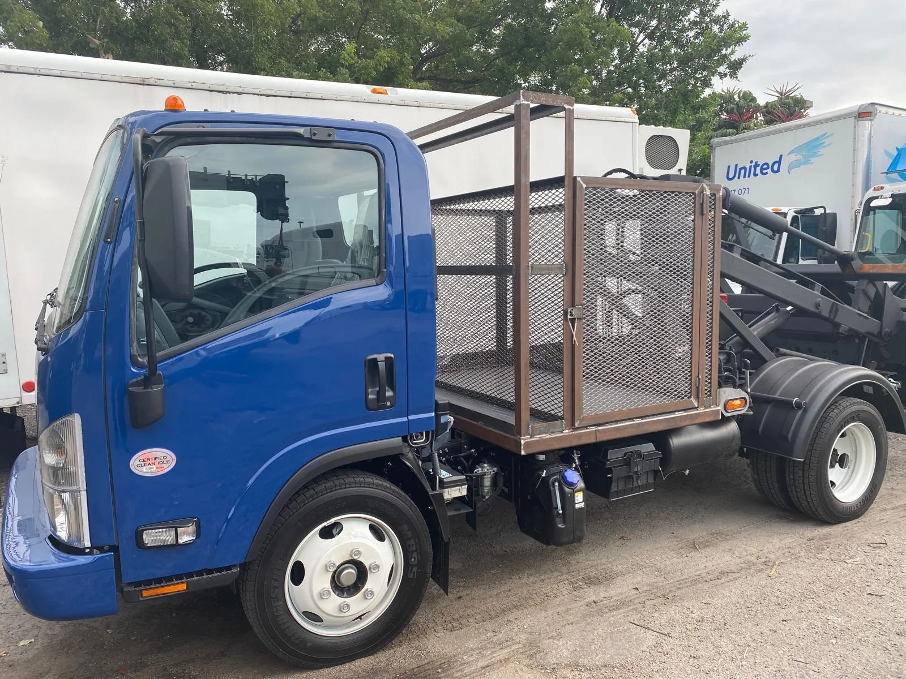
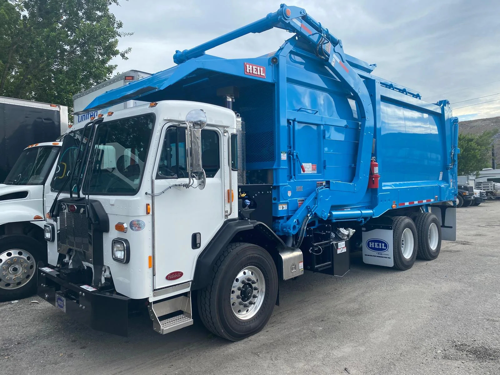

A1 Truck & RV Center
Commercial & Fleet Collision Repair · Pompano Beach, Florida
A1 Truck & RV Center
Commercial & Fleet Collision Repair | Pompano Beach, Florida
Automotive · Commercial Fleets · South FloridaAbout
A1 Truck & RV Center supports commercial and fleet collision/body repair needs from its Pompano Beach commercial facility. We work with fleet managers, operations teams and businesses that need a dependable commercial repair relationship.
1982 NW 44th Street, Pompano Beach, FL 33064
954-974-4479
Credibility when a fleet manager checks A1 after receiving an email or call, plus direct connection outreach to operations and fleet decision-makers.
Example post
Commercial & Fleet Collision Repair

When a work vehicle is down, routes, appointments, crews and revenue can all be affected. That is why fleet operators benefit from having a commercial collision repair resource identified before the next accident occurs.
A1 Truck & RV Center · Pompano Beach, FL
#FleetManagement #CommercialVehicles #CollisionRepair #SouthFlorida